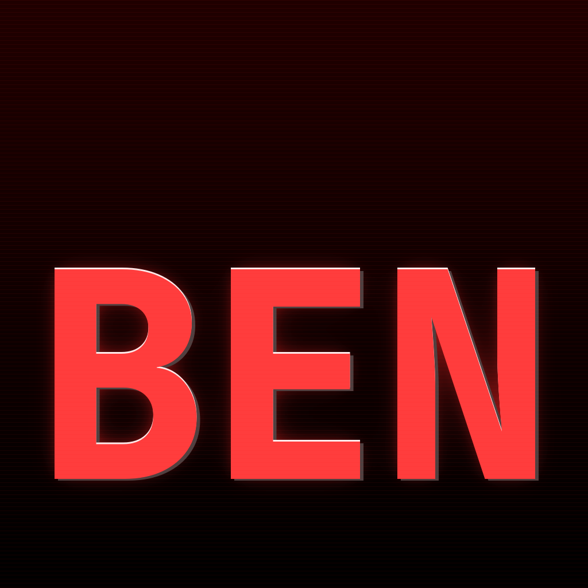

New strict-center options: 05-07. No underscore. Pick one and I will apply it.
01 - Previous favorite baseline

02 - Slanted hacker style
03 - Glitch style
04 - Bold minimal
05 - Centered remake of #1
06 - Centered hard contrast
07 - Centered neon heavy glow